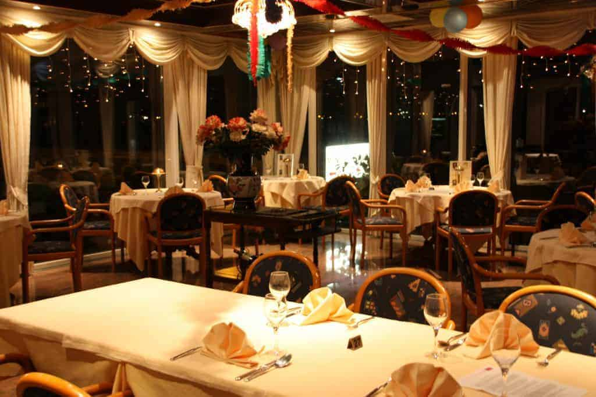

Dinsdag t/m donderdag
€3350p.p.
- Onbeperkt eten
- Onbeperkt frisdrank
- Onbeperkt koffie & thee
- Onbeperkt bier
- Onbeperkt wijnen
- Kinderen 0 t/m 3 jaarGratis (excl. drank)
- Kinderen 4 t/m 7 jaar€ 16,50
- Kinderen 8 t/m 11 jaar€ 19,50
Chinees · Indisch · Japans
Geniet van de verse smaken en culinaire Oosterse gerechten, in buffetvorm of ter plaatse bereid door onze chefkoks.
Rijksweg 4, Duiven

Samen, dat staat bij ons voorop. Ons unieke restaurantconcept stelt u in staat om op een ontspannen en bovenal culinair verrassende manier samen met elkaar te genieten, of u nu met z'n tweetjes bent, met het hele gezin of met een grote groep.
U vindt bij ons een aangename, intieme ambiance die uitnodigt tot een gezellig interactief avondje uit met uw geliefden of vrienden. Onze arrangementen zijn all-in: u betaalt een vast bedrag per persoon voor al het eten en drinken.
De inrichting is optimaal afgestemd op samen onbeperkt genieten. Fijne, ruim opgezette tafelsettings en goede comfortabele stoelen in verschillende grote en kleine zalen staan voor u klaar voor urenlange momenten samen.
Bijna 100 warme en koude gerechten, van bami, nasi, foe yong hai en babi pangang tot soepen en speciale Ming Palace schotels.
Teppanyaki zonder in de rij te staan: bestel eenvoudig met de QR-code, onze chefkok bereidt het meteen voor u en de bediening brengt het aan tafel.
Voor de kleinsten is er een apart speelhoekje. Al meer dan twintig jaar dé Chinees van Duiven en omstreken.
All you can eat & drink, 2 uur lang. Kies vooraf welk arrangement het beste past bij uw bezoek en reserveer online. Wilt u langer blijven? Dat kan altijd door online de gewenste tijd bij te boeken.
€3350p.p.
€3650p.p.
Op feestdagen geldt ons weekendtarief, met uitzondering van de kerstdagen: die prijzen worden rond de kerstperiode bekendgemaakt op onze website en Facebook. Sterke drank is niet inbegrepen.
Ons uitgebreide all-in Chinese en Japanse buffet, inclusief drankjes (frisdranken, bier en wijn, exclusief sterke drank), biedt meer dan 70 diverse gerechten: soepen, voorgerechten, bijgerechten, salades, hoofdgerechten, specialiteiten en desserts zoals ijs en vers fruit.
Ook kunt u diverse gerechten laten bereiden op onze teppan yaki bakplaat. In de koeling vindt u versbereide sushi, kleine gerechtjes van beenham, zeevruchten, poke bowls en tal van salades, altijd supervers en prachtig uitgestald.
Check de actuele buffetdagen telefonisch: 0316 264 034.
Keuze uit 2 soorten soep.
Keuze uit ± 11 soorten koude voorgerechten en gestoomde dim sum.
Keuze uit 7 soorten vis, 7 soorten vlees en diverse groenten.
Kies uit 18 verschillende gerechten uit onze Chinese keuken.
Keuze uit 12 soorten fruit en lekker dessertgebak.
Onlangs gestart, met verschillende smaken en andere lekkernijen.
Al onze gerechten zijn ook online te bestellen om thuis te eten. Afhalen of bezorgen (vanaf € 20,- in Duiven, Westervoort en Zevenaar). Minimaal bestelbedrag € 10,-. 's Maandags gesloten.
Bestel onlineKipfilet met Szechuan saus, babi pangang, foe yong hai, saté ajam, mini loempia's en keuze uit nasi, bami of witte rijst.
Voor maar € 32,50
Geniet zelf zorgeloos van uw bijeenkomst of (tuin-)feest, terwijl uw gasten op culinair gebied verrast worden. Wij verzorgen de catering op uw locatie voor 10 tot 150 personen tot in de finesses. Kies uit 5 arrangementen.
€ 13,50 p.p.
Vanaf 15 personen
Babi pangang, foe yong hai, tjap tjoy, koe loe yuk, kip à la Ming Palace (kipfilet met groenten in ketjapsaus), mini loempia's, kerry koekjes, nasi en bami.
€ 15,50 p.p.
Vanaf 10 personen
Babi pangang, foe yong hai, tjap tjoy, tausi kai (kipfilet met zwarte sojabonensaus), king do yuk (varkenshaas met zoet-pikante saus), saté ajam, mini loempia's, kerry koekjes, nasi en bami.
€ 17,50 p.p.
Vanaf 10 personen
Babi pangang, foe yong hai, tjap tjoy, szechuan yuk (varkenshaas met pikante saus), kipfilet met champignons, cha shiuw, saté ajam, gong bao kai (kipfilet met licht pikante saus), daging roetjak (gekruid rundvlees met roerbaksaus), mini loempia's, kerry koekjes, nasi en bami.
€ 20,50 p.p.
Vanaf 10 personen
Babi pangang, foe yong hai, saté ajam, huang gong yu (tongfilet met zoet-pikante saus), cha shiuw, ossenhaas met broccoli, kipfilet met cashewnoten, kipfilet met pikante saus, tausi yuk (varkenshaas met zwarte sojabonensaus), mini loempia's, kerry koekjes, mihoen, nasi en bami.
€ 23,50 p.p.
Vanaf 10 personen
Babi pangang, foe yong hai, tjap tjoy, Chinese garnalen met knoflooksaus, ossenhaas met zwarte peper, saté ajam, kip à la Peking stijl, babi spek, king do yuk (varkenshaas met zoet-pikante saus), kipfilet met cashewnoten, cha shiuw met ketjapsaus, mihoen, nasi en bami.
Vragen? Neem contact met ons op, wij bespreken graag hoe we uw bijeenkomst of feest tot een culinair succes kunnen maken.
| Maandag | Gesloten |
|---|---|
| Dinsdag | 16:00 - 21:00 |
| Woensdag | 16:00 - 21:00 |
| Donderdag | 16:00 - 21:00 |
| Vrijdag | 16:00 - 21:00 |
| Zaterdag | 13:00 - 22:00 |
| Zondag | 13:00 - 22:00 |